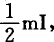
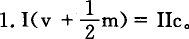
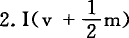
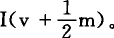
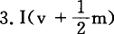
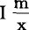
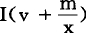
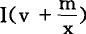

3.积累时Ⅱc的交换
可见，在Ⅰ（v＋m）和Ⅱc的交换上有不同的情况。
在简单再生产时，二者必须相等，必须互相补偿；因为如果不是这样，正像前面说过的，简单再生产就不可能不受到干扰。
在积累时，首先要考察的是积累率。在以上各个场合，我们都假定第Ⅰ部类的积累率＝并且每年保持不变。我们只是假定这个积累资本分成可变资本和不变资本的比例会发生变化。这里有三种情形：因此，Ⅱc小于Ⅰ（v＋m）。必须总是这样，否则第Ⅰ部类就无法积累了。大于Ⅱc。在这个场合，要完成这一补偿，就要把Ⅱm的一个相应部分加进Ⅱc，使Ⅱc的总额＝这里的交换，对第Ⅱ部类来说，不是它的不变资本的简单再生产，而已经是积累，即它的不变资本已经增加了用以交换第Ⅰ部类的生产资料的那部分剩余产品。这种增加同时包括第Ⅱ部类还从它本身的剩余产品中取出一部分相应地增加它的可变资本。小于Ⅱc。在这个场合，第Ⅱ部类没有通过这种交换而全部再生产它的不变资本，所以必须通过向第Ⅰ部类购买，才能补偿这种不足。但是，这种情况并不需要第Ⅱ部类可变资本的进一步积累，因为它的不变资本只是通过这种购买在原有数量上全部再生产出来。另一方面，第Ⅰ部类中仅仅积累追加货币资本的那一部分资本家，却已经通过这种交换完成了这种积累的一部分。
简单再生产的前提是Ⅰ（v＋m）＝Ⅱc。这个前提同资本主义生产是不相容的，虽然这并不排斥在10—11年的产业周期中某一年的生产总额往往小于前一年的生产总额，以致和前一年比较，连简单再生产也没有。不仅如此，在人口每年自然增殖的情况下，只有在人数相应地增加的不从事生产的仆役参与代表全部剩余价值的1500的消费时，简单再生产才会发生。而在这种情况下，就不可能有资本的积累，即实际的资本主义生产。因此，资本主义积累的事实排斥了Ⅱc＝Ⅰ（v＋m）这一可能性。不过，甚至在资本主义积累中，仍然可能发生这样的情况：由于过去的一系列生产期间进行积累的结果，Ⅱc不仅与Ⅰ（v＋m）相等，而且甚至大于Ⅰ（v＋m）。这就是说，第Ⅱ部类的生产过剩了，而这只有通过一次大崩溃才能恢复平衡，其结果是资本由第Ⅱ部类转移到第Ⅰ部类。——如果第Ⅱ部类自己再生产一部分不变资本，例如在农业中使用自己生产的种子，那也不会改变Ⅰ（v＋m）和Ⅱc的关系。在第Ⅰ部类和第Ⅱ部类之间的交换中，Ⅱc的这个部分和Ⅰc一样，无须加以考察。如果第Ⅱ部类的产品有一部分可以作为生产资料进入第Ⅰ部类，那也不会改变问题的实质。这部分产品就会和第Ⅰ部类提供的一部分生产资料互相抵消，如果我们愿意对社会生产的两大部类（生产资料的生产者和消费资料的生产者）之间的交换进行纯粹的、不受干扰的考察，那么应该从一开始就把这个部分从双方都扣除。
因此，在资本主义生产中，Ⅰ（v＋m）不能与Ⅱc相等；或者说，二者不能在交换时互相抵消。如果是Ⅰm中第Ⅰ部类资本家作为收入花掉的部分，那么，就可以等于、大于或小于Ⅱc；但是，必须总是小于Ⅱ（c＋m），其差额就是第Ⅱ部类的资本家阶级在Ⅱm中无论如何必须由自己消费的部分。
应该指出，在关于积累的这个阐述中，就不变资本是在它参与下生产的商品资本的一部分价值来说，不变资本的价值没有得到精确的说明。新积累的不变资本的固定部分，只是逐渐地、周期地、按照这些固定要素的不同性质而以不同的程度加入商品资本的；因此，在原料和半成品等等大量进入商品生产时，商品资本的较大的部分是由流动的不变组成部分和可变资本这二者的补偿构成的。（鉴于流动组成部分的周转，像以上这样阐述是可以的；因此，可以假定，在一年之内，流动部分以及由固定资本转给它的那部分价值周转十分频繁，以致所提供的商品的总额，在价值上和进入年生产的总资本相等。）但是当用机器进行生产时，在只用辅助材料而不用原料的地方，劳动要素v就必然会作为商品资本的较大的组成部分再现。在计算利润率时，剩余价值是按总资本计算的，与固定组成部分周期地转移到产品中去的价值的多少无关。但是，对周期地生产的每个商品资本的价值来说，只是按照不变资本的固定部分由于消耗而把价值平均转移到产品本身中去的程度，把不变资本的固定部分计算在内。